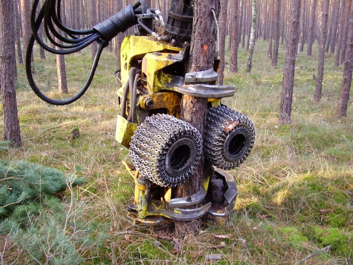
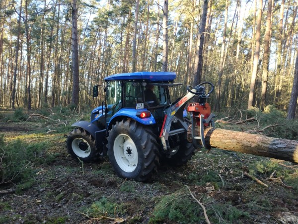
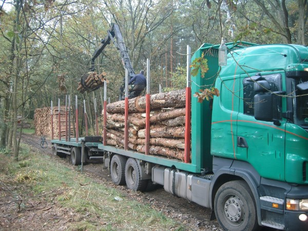

Holzernte
Unser Ziel sind gerade, starke Z-Bäume (Z für Zukunft), die gutes Säge- und Wertholz liefern.

Durchforstung
Wir pflanzen bis zu 10.000 Bäume pro Hektar. Eng stehend wachsen sie gerade nach oben. Wird es mit den Jahren zu eng, nehmen wir krumme und unterdrückte Bäume heraus. Die übrigen danken es mit einem kräftigen Wachstumsschub.
Harvester und Rückezug
Der Harvester sägt den Baum ab, entastet und vermisst ihn. Sein Computer schlägt die beste Aufteilung des Stamms vor. Der Rückezug sammelt das Holz ein und poltert es am Waldweg.

Langholz von Hand
Langholz fällen wir überwiegend mit der Motorsäge. Schlepper und Rückezange ziehen die Stämme zum Polter.

Reisighaufen als Lebensraum
Vor einer neuen Kultur räumen wir die Fläche auf und schichten die Reste auf dicke Baumstümpfe. Dort ziehen Hasen und Reptilien ein.

Hackschnitzel aus Waldrestholz
Bei der Endnutzung lassen wir mindestens 40 Prozent der Bäume stehen, Kahlschläge gibt es bei uns nicht. Die Kronenreste macht ein mobiler Hacker vor Ort zu Hackschnitzeln für Strom und Wärme.


Holz direkt aus dem Wald
Ob Kaminholz, Bohlen nach Maß oder Rundholz in Lkw-Mengen: Rufen Sie uns an, wir beraten Sie gern.
Kontakt aufnehmen